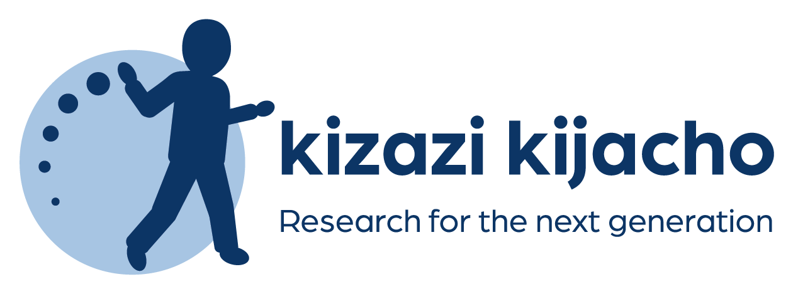
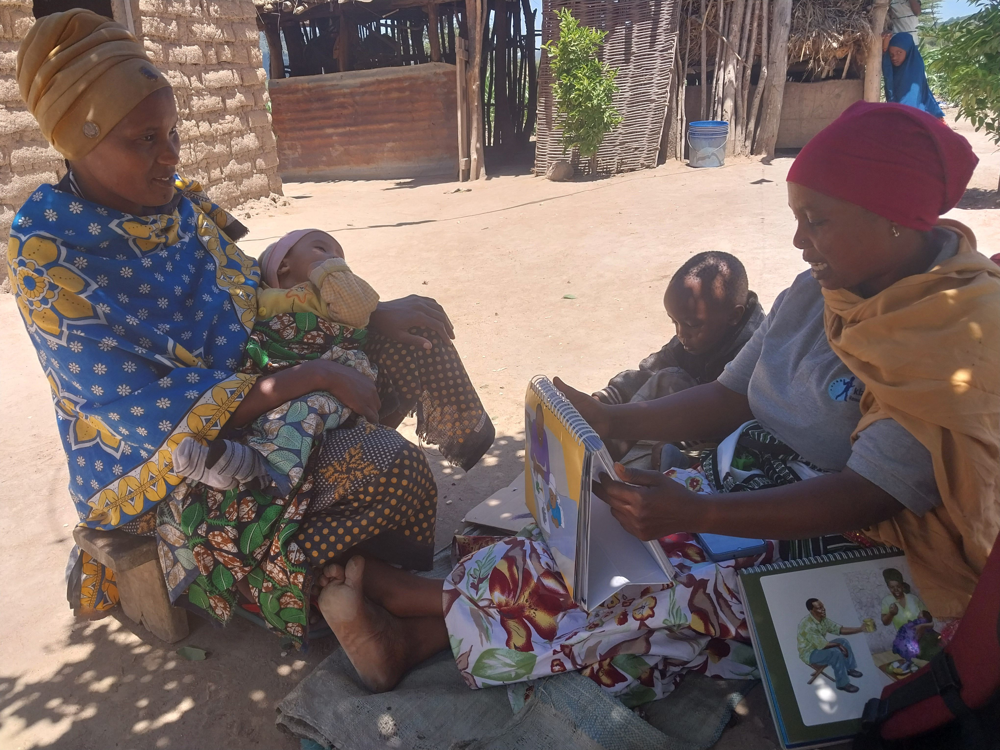
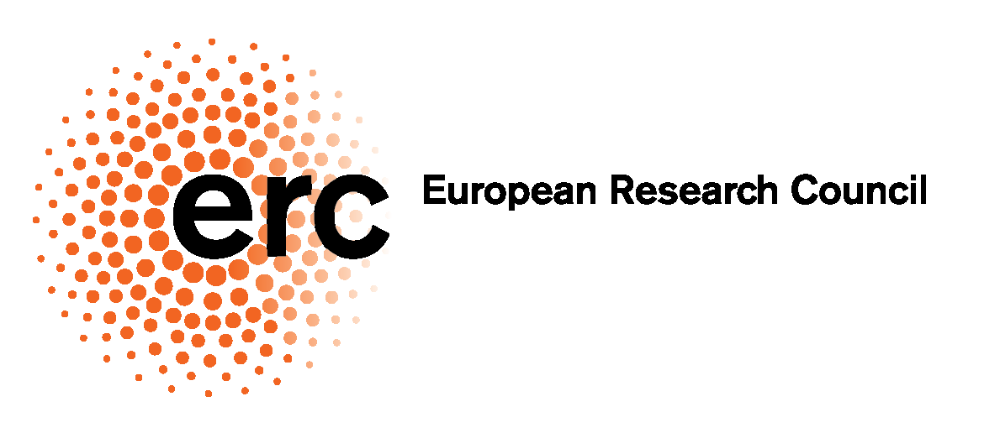
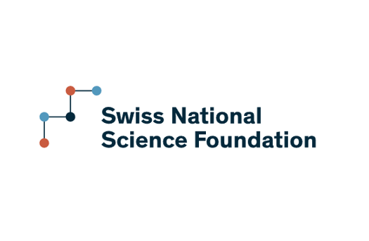
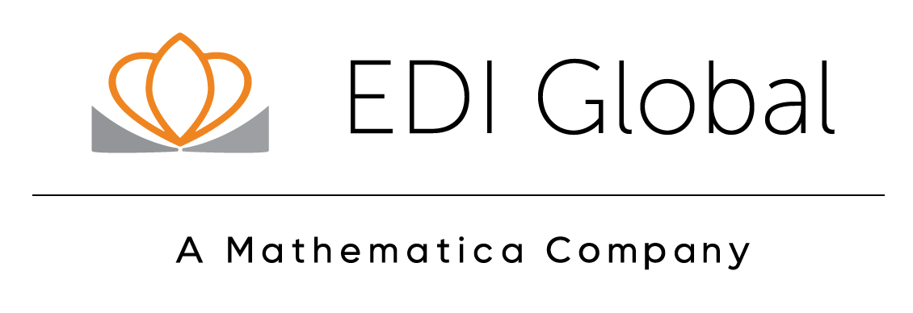
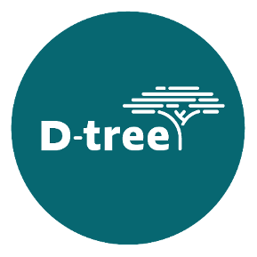
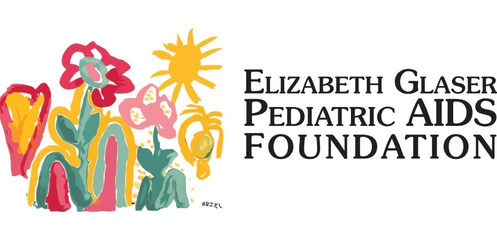
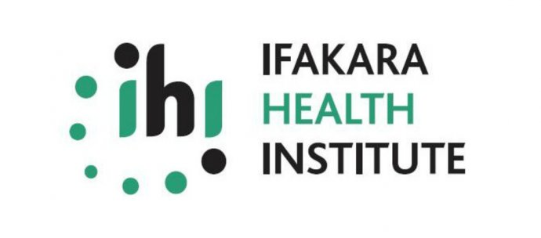

Evidence on what helps children thrive
A long-term research program in Tanzania on the constraints families face in early childhood, and on the policies that can relax them.
Poor developmental outcomes in early life can have lasting effects. We study why, how to mitigate these effects, and what works at scale.
ALT: Early-life experiences are crucial for human capital development, influencing both individual and societal outcomes. We study why, how to mitigate any negative effects, and what works at scale.
Kizazi Kijacho combines longitudinal data collection with field and laboratory experiments to investigate what constrains child development in Tanzania — financial resources, information, parental preferences, and how decisions are made within the household — and to test policy tools that address those constraints.
The program is designed to produce evidence that governments and donors can act on: cost-effective, scalable and sustainable models for integrated early childhood development, from pregnancy to the child's fifth year.
Featured study
Research →

Analysis
Cluster RCT
Parenting support and cash transfers: a cluster-randomised trial in Dodoma
A large-scale trial in over 3,500 households, combined with lab-in-the-field experiments, testing a community-based parenting intervention and unconditional cash transfers — alone and in combination — on child development, and examining the role of financial constraints, parental preferences and household decision-making.
From the field
More photos and video →
What we study
Constraints on child development
Which barriers matter most in the first 1,000 days — resources, information, time, or beliefs — and when in early life each input has the greatest effect.
Household decision-making
How parents allocate money and time to children, how mothers and fathers bargain, and what that implies for how transfers and programs should be targeted.
Scalable policy design
Whether interventions delivered through existing government and community structures can work at national scale, and at what cost per child.
Recent output
All outputs →
Report
Kizazi Kijacho: qualitative findings on the implementation, outcomes and sustainability of a community-based parenting intervention
Working paper
Father engagement and support to mothers: the policy elasticity of child-related spending
Policy brief
Empowering Tanzania's next generation for economic growth and inclusion
Partners and funders
See all partners and funders →





